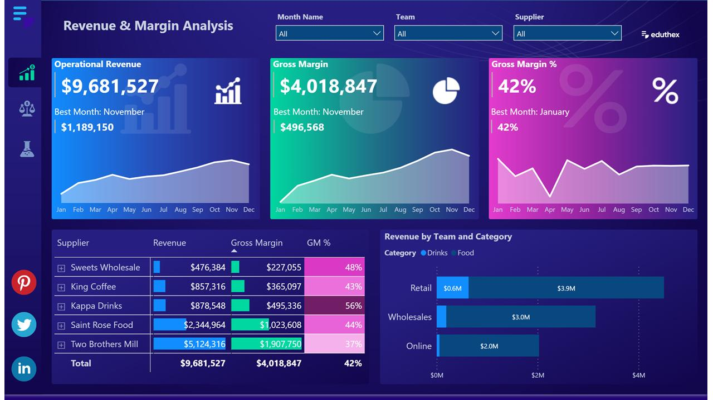

Financial Analysis Dashboard

Business Problem
Management needed a dashboard to compare Budget vs Actual
performance and monitor profitability.
Tools Used
KPIs
- Total Revenue
- Total Expenses
- Total Profit
- Budget Variance
Dashboard Features
- Revenue Trend
- Expense Analysis
- Profit Analysis
- Budget vs Actual
- Monthly Comparison
Key Insights
- Revenue exceeded budget in Q3.
- Expenses increased during year-end.
- Profit margin improved by 12%.